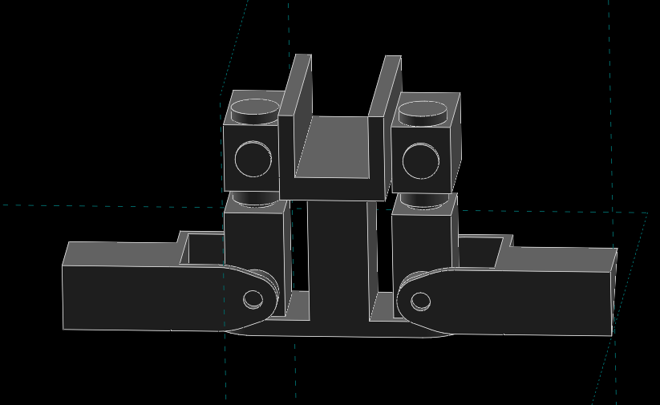
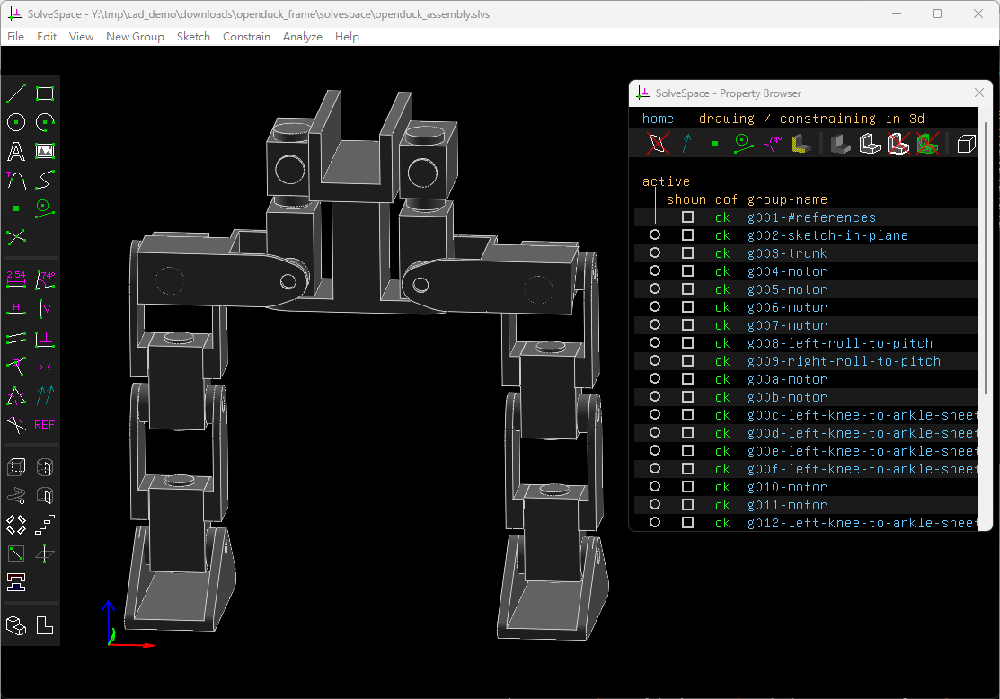
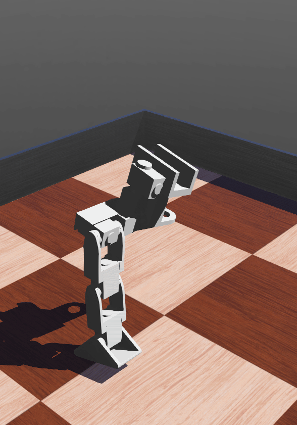

P_BOM <<
Previous Next >> O_Analysis
Openduck
Open Duck Mini 是一款模組化、開源的雙足仿生機器人平台，專為教育與研究設計，具備高自由度與低成本特性。

Openduck in Onshape
https://github.com/apirrone/Open_Duck_reference_motion_generator
https://github.com/mdecycu/Open_Duck_Blender
openduck_frame.7z (parasolid in NX2312)
Openduck in Solvespace:


openduck_in_solvespace.7z

openduck_w9.7z
Inverse Kinematic Solutions:
https://github.com/rpiRobotics/ik-geo
https://pypi.org/project/ik-geo/
https://github.com/weigao95/yaik
https://github.com/rpiRobotics/rpi_general_robotics_toolbox_py
IK-Geo: Unified robot inverse kinematics using subproblem decomposition
- IK‑Geo 是一個針對 6 自由度全旋轉關節機器人（6R manipulator） 的逆運動學解法，採用「子問題分解法（subproblem decomposition）」的方式，把整個 IK 問題拆成六種幾何子問題（如圓與點、兩圓之交、圓與平面、圓與球、三圓交、四圓交）來逐步求解。
- 對於某些特定的機構構型（例如有三個交會或平行軸線的 6R 機構），它能用閉式（closed-form）方式解出所有解，而無需數值搜尋。其他構型則可能退化為對一或兩個關節角做 1D 或 2D 搜索。
- 作者宣稱對於許多常見工業 6R機器人（例如 UR5 等），IK-Geo 的速度能比 IKFast 快 40 倍以上。
- IK-Geo 也具備處理奇異情況的能力（比如在解不存在時提供最小平方近似解或連續近似解）以增加解題穩健性。
- 實作上，IK-Geo 提供 MATLAB、C++、Rust、Python 等多語言版本，並附有測試範例與效能比較。
- IK-Geo 的主要特點是其採用幾何分解，加上部分搜尋混合的策略，以在效率與泛用性之間取得不錯的折衷。
其他參考資料: Automatic Geometric Decomposition for Analytical Inverse Kinematics
設計規格：
- 使用 12 顆 FeeTech STS3215 伺服馬達（7.4V，19kg·cm 扭矩）+ 2 顆 Miuzei 9g 輔助伺服，實現 14 個自由度（雙足腿部 10 DOF，頭頸 4 DOF），支援穩定步態、轉向與精確感測定位。
- 機身採用 3D 列印（PLA 機身硬性結構/TPU 腳底軟性結構），尺寸約 42cm 高，總重約 1.0–1.3kg。
- 控制單元為 Raspberry Pi Zero WH，支援 Wi-Fi/Bluetooth 與模組化感測器擴充（如 IMU、攝影機）。電源為 7.4V 2S（2 顆 18650 電池），峰值電流 4–7A。提供 CAD、韌體與原始碼，採開放授權，零件公開取得，BOM 總成本約$400 美元。
P_BOM <<
Previous Next >> O_Analysis